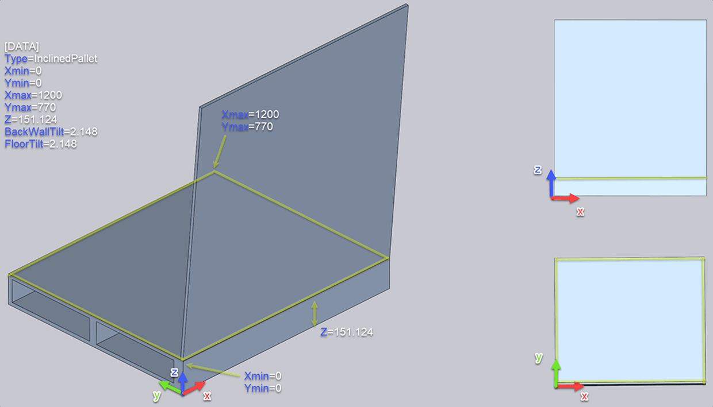
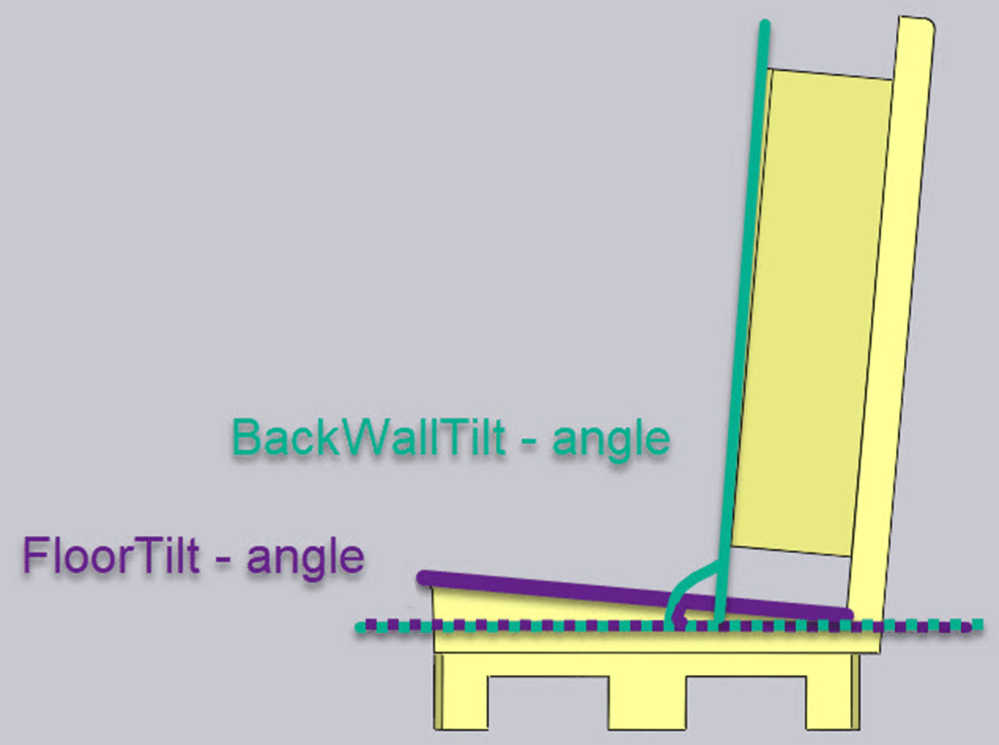
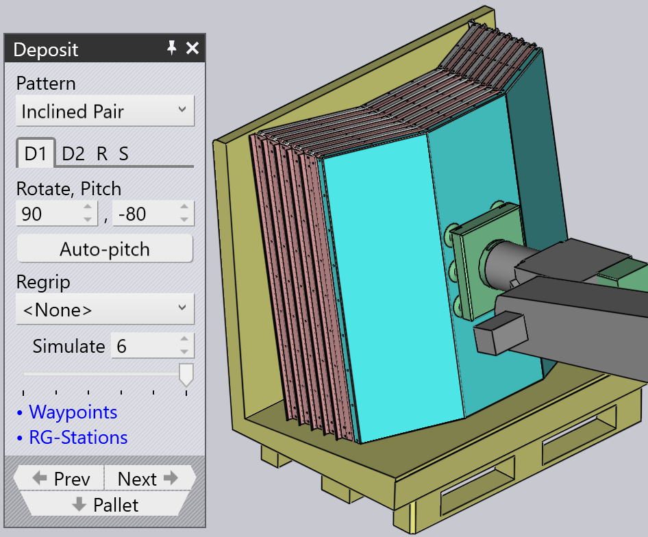
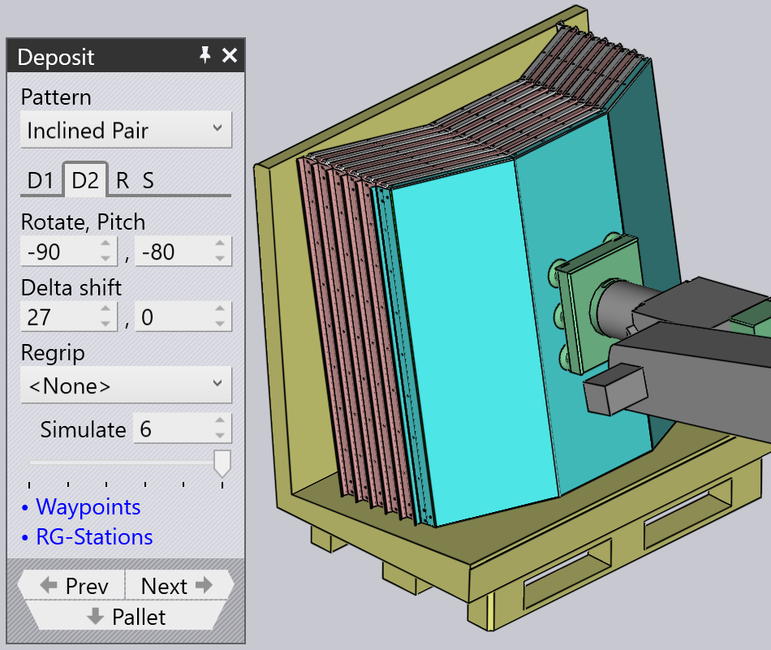
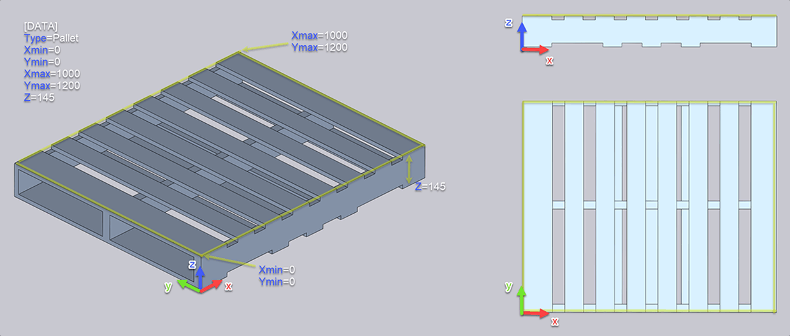
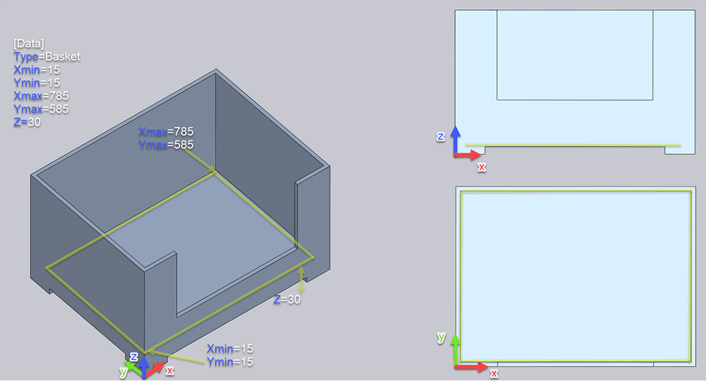
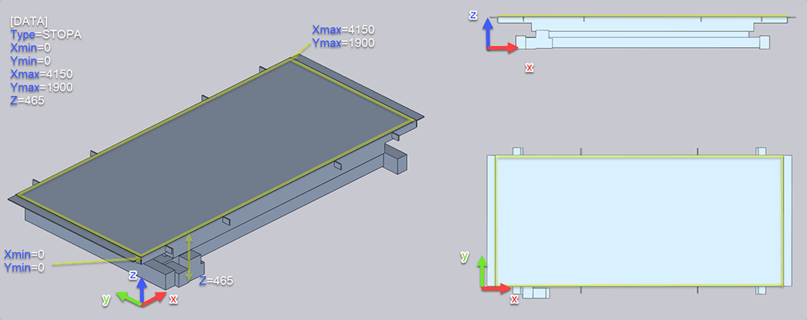
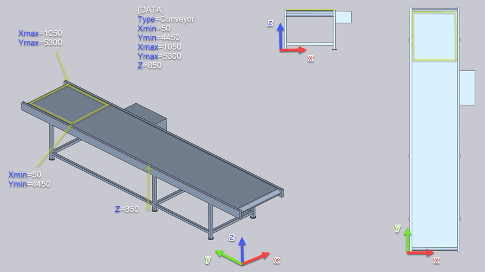

Benutzerdefinierte Zellenkomponenten
Paletten können als benutzerdefinierte 3D-Modelle importiert und als Entladeobjekte definiert werden. Dazu muss die entsprechende INI-Datei bestimmte Parameter enthalten.
INI-Datei: Die INI-Datei kann mit einem einfachen Texteditor, z. B. Notepad, erstellt werden. Benennen Sie die Textdatei genau wie das 3D-Modell und fügen Sie die Dateiendung „ini“ hinzu. Die Parameter können dann in diese Textdatei eingetragen werden. Außerdem sollte die INI-Datei im selben Ordner wie das 3D-Modell gespeichert werden, damit diese Daten beim Import des 3D-Modells verarbeitet werden.
|
| Wert | Beschreibung | Einheit |
|---|---|---|
Type |
|
|
Xmin |
Startkoordinate X (immer unten links) |
mm |
Ymin |
Startkoordinate Y (immer unten links) |
mm |
Xmax |
Endkoordinate X (immer oben rechts) |
mm |
Ymax |
Endkoordinate Y (immer oben rechts) |
mm |
Z |
Höhe ab Fußboden oder ab Oberkante der Ablagefläche |
mm |
BackWallTilt |
Neigungswinkel der Ablagewand (optional) |
° |
FloorTilt |
Neigungswinkel des Ablagebodens (optional) |
° |
Die Werte Xmin/Ymin und Xmax/Ymax geben die Grenzen des Entladebereichs an.
Im Folgenden finden Sie Beispiele für benutzerdefinierte Paletten.
Geneigte Palette
Zunächst muss die Palette mit der unten gezeigten Ausrichtung korrekt definiert werden.

Beachten Sie, dass der Punkt Ymin=0 an der „Innenecke“ der Palette liegen sollte, wie durch die gelbe Markierung in der obigen Abbildung angegeben. Die Höhe der Palette, gemessen an diesem inneren Eckpunkt, muss ebenfalls berücksichtigt werden. Diese muss in der INI-Datei für die Palette eingestellt werden.
[DATA]
Type=InclinedPallet
Xmin=0
Ymin=0
Xmax=1200
Ymax=770
Z=151.124
BackWallTilt=2.148
FloorTilt=2.148Beachten Sie, dass die in der obigen Abbildung gemessene Z-Höhe im Parameter Z eingetragen wurde.
Der Parameter „FloorTilt“ legt den Neigungswinkel des Ablagebodens fest, der in Grad angegeben wird. Bei dieser Palette entspricht er dem Winkel „BackWallTilt“ (Neigungswinkel der Ablagewand; der Innenwinkel beträgt hier 90 Grad).

Mit dieser Palette kann geneigtes Stapeln verwendet werden, um die Teile korrekt zu stapeln:
 
"Pitch" wurde über den Befehl "Auto-pitch" auf -80 eingestellt. "delta shift" wurde manuell auf 27 mm eingestellt, um das Stapeln der Teile zu optimieren.
Palette
Ein benutzerdefiniertes 3D-Modell kann als Typ „Pallet“ importiert und für die Aufnahme- und Entladevorgänge verwendet werden.
Die INI-Datei muss „Type=Pallet“ enthalten, damit das System das Modell als Palette behandelt.
Die Werte Xmin/Ymin und Xmax/Ymax sollten die Grenzen des gelben Aufnahme-/Entladebereichs angeben.

[DATA]
Type=Pallet
Xmin=0
Ymin=0
Xmax=1000
Ymax=1200
Z=145Korb
Ein benutzerdefiniertes 3D-Modell kann als Typ „Basket“ importiert und zum Entladen verwendet werden. Hier dient ein Korbmodell als Beispiel. Der gelbe Bereich ist der Bereich des Korbs, in dem entladen werden kann.
Die INI-Datei muss „Type=Basket“ enthalten, damit das System das Modell als Korb behandelt.
Die Werte Xmin/Xmax und Ymin/Ymax sollten die Grenzen des gelben Entladebereichs angeben.

[DATA]
Type=Basket
Xmin=15
Ymin=15
Xmax=785
Ymax=585
Z=30STOPA-Palette
Ein benutzerdefiniertes 3D-Modell kann als Typ „STOPA“ importiert und für die Aufnahme- und Entladevorgänge verwendet werden. Das Beispiel zeigt ein STOPA-Modell. Der gelbe Bereich ist der Bereich des Förderers, in dem Teile aufgenommen oder entladen werden können.
Die INI-Datei muss „Type=STOPA“ enthalten, damit das System das Modell als STOPA-Palette behandelt.
Die Werte Xmin/Ymin und Xmax/Ymax sollten die Grenzen des gelben Aufnahme-/Entladebereichs angeben.

[DATA]
Type=STOPA
Xmin=0
Ymin=0
Xmax=4150
Ymax=1900
Z=465Förderband
Ein benutzerdefiniertes 3D-Modell kann als Typ „Conveyor“ importiert und für die Aufnahme- und Entladevorgänge verwendet werden.
Die INI-Datei muss „Type=Conveyor“ enthalten, damit das System das Modell als Förderband behandelt.
Die Werte X und Y sollten die Grenzen des gelben Aufnahme-/Entladebereichs angeben.

[DATA]
Type=Conveyor
Xmin=50
Ymin=4450
Xmax=1050
Ymax=5300
Z=850